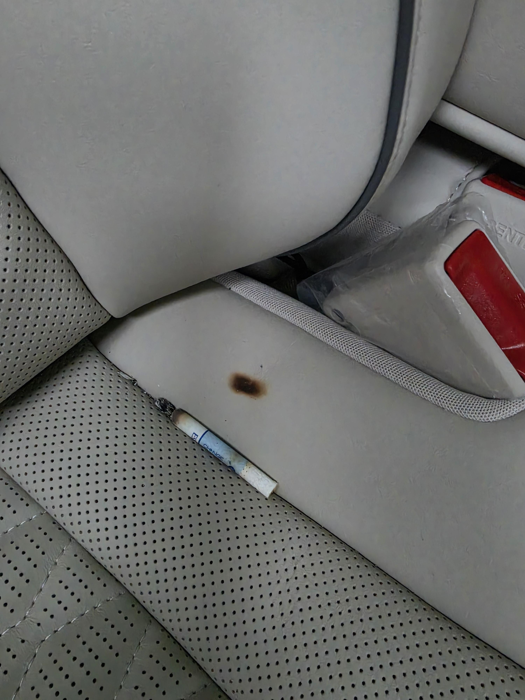

친구놈 손절 가능? ㅋㅋ

친구놈 손절 가능? ㅋㅋ
이미 핀것부터 씹새끼고 저런새끼들음 애초에 똥싸고 물어줄 생각도 없고.. 저기서 물어줄생각없는거부터 이미.. 알지?
호구새끼임?친구는 널 존중해주는거같지도 않은데 친구는 맞음?
상대는 너를 친구라고 생각 안하는거 같은데 ㅋㅋ
친구 저런거 밖에 없냐? 사람 오래 봤다고 다 친구 아니고 시간 지나면 들일 수 있는 시간 줄어드니 버릴껀 구별해서 버려라
실수는 할수있지. 근데 복원을 안해주면 연끊어야지
니가 뭔 친구여 ㅋㅋ 넌 걍 차태워주는사람임
친구 맞긴 함?
시트 비 브거나 최소한 저거라도 복원 해주는 애면 그나마 봐줌 실스일수도있으니.. 근데 태도가 개좃같다?? 바로 꺼져
친구가 아니라 넌 꼬봉임
ㅋㅋㅋㅋ 비흡연자에 뚜벅인데도 화나내 ㅋㅋ
넌 걔한테 친구가 아니다
지금 당장 차단 박아도 인생에 아무런 변화가 없음
일단 차에서 담배피는 능지들끼리 잘만난거같긴 하고
작성자가 담배핀단 얘긴없는데
비흡연자가 자기차에서 담배피게 둔다고?
판타지소설임?
앞페이지보면 작성자가 술먹고 실수한거라고 해놓음. 말릴세도 없지않았을까 싶다
그리고 명확하지않은일에 맘대로 판단하고 대뜸 비난 박는건 좀 보기 그래
작성자 친구가 술먹고 그랬다는거 아니었음?
작성자가 그런댓글을 써놨다고
나는그냥 차에서 담배피는거 자체가 싫은거야
고속도로에서도 100으로달리다가 갑자기 60으로 줄면서 창문열리고 담배피는 그지같은놈들을 수백번 보니까 그냥 혐오가 차오름
배상청구를 해야지
다른사람차에서....담배를 피운다고?
정말 백해무익한 놈 같은디..